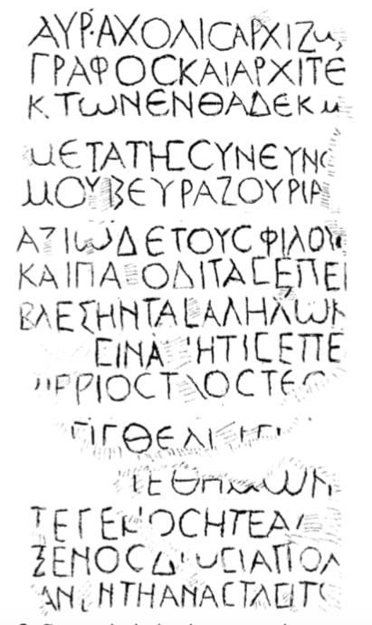

მხატვართუხუცეს ავრელი აქოლისის ბერძნული წარწერა სამთავროს სამაროვნიდანGreek inscription plaque of Samtavro necropolis
მხატვართუხუცეს ავრელი აქოლისის ბერძნული წარწერა სამთავროს სამაროვნიდან
Greek inscription plaque of Samtavro necropolis
შინაარსი / Summary
ეპიტაფია Epitaph
ბიბლიოგრაფია Bibliography
კრიტიკული გამოცემა Interpretive Edition
Αὐρ ήλις Ἀχόλις ἀρχιζω -
γράφος καὶ ἀρχιτέ -
κτων ἐνθάδε κεῖμ αι
μετὰ τῆς συνεύνο -
5υ μου Βευραζουρία ς.
ἀξιῶ δὲ τοὺς φίλους
καὶ παροδίτας ἐπι -
βλέψειν τὰς ἀλ λήλων.
Πρά ξεις ἵνα μήτις ἐπὶ
10μυριοστὰ ἔτη ὠστ ιεῖ ται
μήτις θελήσ ει θάπτειν
μεθ᾿ ἡμῶν
εἴτε γένος εἴτε ἄλ λος
ξένος, δώσει ἀπολ ογ-
15ίαν ἐν τῇ ἀναστἀσει το ῦ
დიპლომატიური გამოცემა Diplomatic Edition
ΑΥΡ ΗΛΙΣ ΑΧΟΛΙΣ ΑΡΧΙΖΩ
ΓΡΑΦΟΣ ΚΑΙ ΑΡΧΙΤΕ
ΚΤΩΝ ΕΝΘΑΔΕ ΚΕΙΜ ΑΙ
ΜΕΤΑ ΤΗΣ ΣΥΝΕΥΝΟ
5Υ ΜΟΥ ΒΕΥΡΑΖΟΥΡΙΑ Σ
ΑΞΙΩ ΔΕ ΤΟΥΣ ΦΙΛΟΥΣ
ΚΑΙ ΠΑΡΟΔΙΤΑΣ ΕΠΙ
ΒΛΕΨΕΙΝ ΤΑΣ ΑΛ ΛΗΛΩΝ
ΠΡΑ ΞΕΙΣ ΙΝΑ ΜΗΤΙΣ ΕΠΙ
10ΜΥΡΙΟΣΤΑ ΕΤΗ ΩΣΤ ΙΕΙ ΤΑΙ
ΜΗΤΙΣ ΘΕΛΗΣ ΕΙ ΘΑΠΤΕΙΝ
ΜΕΘ᾿ ΗΜΩΝ
ΕΙΤΕ ΓΕΝΟΣ ΕΙΤΕ ΑΛ ΛΟΣ
ΞΕΝΟΣ ΔΩΣΕΙ ΑΠΟΛ ΟΓ
15ΙΑΝ ΕΝ ΤΗ ΑΝΑΣΤΑΣΕΙ ΤΟ Υ

Plaque from Samtavro necropolis, 1938
{'ka': 'ავრელი აქოლისი, მხატვართუხუცესი და ხუროთმოძღვარი აქ განვისვენებ ჩემს მეუღლე, ბევრაზურიასთან ერთად, ვთხოვ მეგობრებსა და გამვლელებს, თვალი ეჭიროთ ერთმანეთის საქმიანობაზე,\n რომ მეათიათასე (წლამდე) ვინმემ არ დააზიანოს (ჩვენი საფლავი), ან ვინმემ არ მოინდომოს დასაფლავება ჩვენთან ერთად, ან ჩვენი გვარისამ, ან უცხომ (და თუ ასეთი რამ მოხდა,) მან აგოს\n პასუხი თავის აღდგომისას.', 'en': 'I, Aurelis Acholis, chef artist and architect am buried here together with my wife, Bevrazuria, I ask to my friends and passer-by to keep eye on each other’s behaviour,\n for even in thousand years nobody could damage (our grave), or nobody could be buried in the same place, neither our relative of a stranger (and if such a thing will happen)\n let this man be responsible for it during his resurrection.'}
{'ka': 'წარწერა წარმოადგენს ეპიტაფიას.\n მნიშვნელოვანია წარწერაში მოხსენიებული პირის, ავრელი აქოლისის მსაზღვრელები: მხატვართუხუცესი (იშვიათად ხმარებული) და ხუროთმოძღვარი, რაც იბერიის სამშენებლო\n საქმის შესწავლის ფართო პერსპექტივას სახავს. სახელი ავრელი აქოლისი (Αὐρήλιος | Αὐρήλις, Ἀχόλιος | Ἀχόλις) ბერძნულ–რომაული სამყაროს კუთვნილებაა, მისი პირველი\n ნაწილი მაინც საკმაოდ გავრცელებულია როგორც დედა საბერძნეთსა და რომში, აგრეთვე პერიფერიებში, მაგრამ ეს გარემოება სრულიად არ გულისხმობს იმას, რომ ავრელი–აქოლისი,\n ხუროთმოძღვარი და მხატვართუხუცესი, უეჭველად ბერძენი თუ რომაელი კაცია. ბერძნულ–რომაული პირთა სახელები ხომ საყოველთაოდ გავრცელებული იყო საქართველოში,\n განსაკუთრებით ქრისტიანობის მიღების შემდეგ. კაცს ჰქვია ბერძნულ–რომაული სახელი, მის მეუღლეს ადგილობრივი არა ბერძნული სახელი, ორივენი ცხოვრობენ საქართველოში,\n დაკრძალულნი არიან სამთავროში და ეჭვს გარეშეა, რომ კაცი აქაური ხუროთმოძღვარი და მხატვართუხუცესი იყო, აქაურ საქმეს აკეთებდა. ავრელი აქოლისი წარმოშობით რომ\n არ ყოფილიყო ქართველი, თავისი მოღვაწეობით მაინც ქართველი იყო.\n მამაკაცის სახელი ბერძნულ-რომაულია, მისი მეუღლის - ირანული. ტექსტის ანალიზის საფუძველზე ირკვევა, რომ განსვენებულნი ადგილობრივი წარმოშობის არიან.\n ამ გარემოებაზე ყურადღებას ამახვილებს 12–14 სტრიქონების εἴτε γένος εἴτε ἄλλος ξένος... γένος ნიშნავს: გვარი, ტომი, თესლი... ἄλλος ξένος – სხვა უცხოელი.\n აშკარაა, რომ შეპირისპირება გვაქვს: ავრელი აქოლისსა და ბევრაზურიას არ სურთ, რომ მათთან ერთად სხვა ვინმე დაიკრძალოს, არც "სხვა უცხოელი" და არც "თავისიანი" –\n ე.ი. "თავისი გვარისა თუ ტომისა". რაკი "უცხოელს" უპირისპირდება გამოთქმა γένος, ამიტომ საფიქრებელია, რომ მას უფრო "ტომის" გაგება აქვს, ვიდრე "გვარისა".\n ავრელი აქოლისი ამბობს: არც ჩვენი ტომისა და არც უცხოელი არ დაასაფლავონ ჩვენთან ერთადო. ძნელი წარმოსადგენია, რომ ბერძენი კაცი, საქართველოში დამარხული,\n ასე უპირისპირებდეს ერთმანეთს თავის – ბერძნულ – ტომს უცხო ტომებს. წარწერის ამ ნაწილზე დაკვირვებით გამოდის, რომ ამ სიტყვების მთქმელი არის ადგილობრივი\n მკვიდრი და არ უნდა თავის გვერდით დაასაფლავონ არც თავისიანი (ე.ი. ქართველი) და არც უცხოელი. ამ მოსაზრების საწინააღმდეგოდ შეიძლებოდა თქმულიყო, რომ\n წარწერის ბოლო ნაწილი ტრაფარეტულია ეპიტაფიისათვისო, მაგრამ არც ასე ჩანს, თუ შევადარებთ მას ამ დროის სხვა ეპიტაფიებს. დათარიღების საფუძველია პალეოგრაფიული მონაცემები (ორგვარი σ, c, და C, μ მრგვალი შუა ხაზით, სამკბილა მრგვალი ω, ψ-ს\n სრულიად თავისებური მოხაზულობა; ლიგატურა ; α და λ მარცხნივ ზემოთკენ წაგრძელებული შტრიხით) და ენობრივი დამახასიათებლები (შემოკლება ΑΥΠ. იტაციზმის\n სხვადასხვაგვარი ვარიანტი: ει=ι, η=ει და ι=ει) წარწერა გვიან რომაული, ადრე ბიზანტიური ხანით უნდა დათარიღდეს. უფრო კონკრეტულად - უკანასკნელი ფრაზის\n მიხედვით ("მან აგოს პასუხი თავისი აღდგომისას", ე.ი. განკითხვის დღეს) იგი ქრისტიანული ძეგლია.', 'en': 'Tinatin Kaukhchishvili:\n It is notable that the attributes “Chef artist and architect” designated to the main character Aurelis Acholis represent the development of the building institutions in Iberia.\n The name (Αὐρήλιος | Αὐρήλις, Ἀχόλιος | Ἀχόλις) is of Greco-Roman origin. The first part of the name is widely spread in central Greece and Rome as well as in the periphery,\n but having this name in the inscription does not prove that Aurelis Acholis is either Greek or a Roman man.\n\n Greco-Roman names have been spread in Georgia especially after receiving Christianity. The male name is Greco-Roman, the woman’s name is local. Both lived in Georgia and are buried in the Samtavro monastery.\n It is undoubted that the man was the architect and was leading the local work. So even if Aurelis Acholis was not Georgian his work was dedicated to Georgia.\n The man’s name is Greco-Roman and the woman’s name is Iranian. The text analysis show that they have different origin as the lines 12-14 highlight the words εἴτε γένος εἴτε ἄλλος ξένος... γένος meaning: family, tribe, nation… ἄλλος ξένος - other foreigner.\n\n We witness the type of antagonism: Aurelis Acholis and Bevrazurai do not want somebody else to be buried next to them, neither “stranger” nor “relative” - i.e. from the same family or tribe”. As the word “stranger” is opposed by γένος.\n We can interpret this word with “nation” rather than “family”. Aurelis Acholis states: nobody from his nation nor the foreigner can be buried next to him. It is hardly possible that a man from Greece buried in Georgia would oppose his nation - Greek - to other nations.\n We assume that a person who says these words is local for Georgia and he wants to clarify that neither somebody from his nation (a Georgian) nor a foreigner can be buried next to him. On the other hand, we could suggest that the last part of the epitaph is typical for the epitaphs of this period, but when we compare them to one other, we receive a different result.\n\n Inscription can be given a date according to the paleontological data (two versions of σ, c, and C, μ with round middle crossbar, trident shape round ω, a noticeably peculiar shape of ψ; ligature; α and λ with longer line at the upper left side) and linguistic characteristics (like abbreviation ΑΥΠ., different versions of itacism: ει=ι, η=ει and ι=ει) the inscription is late Roman,\n early Byzantin period. More precisely, according to the last line (“let this man be responsible for it during his resurrection” i.e. Day of Judgement) it is a Christian inscription.'}
<div type="edition" xml:lang="ka" ana="mtavruli" xml:space="preserve">
<ab>
<lb n="1"/><w lemma="ქრისტე"><expan><abbr>ქ</abbr><ex>რისტ</ex><abbr>ე</abbr></expan></w>
<w lemma="განსუენება"><expan><abbr>გა</abbr><ex>ნ</ex><abbr>ო</abbr><ex>ჳ</ex><abbr>ს</abbr><ex>უ</ex><abbr>ენე</abbr></expan></w>
<w lemma="სულ">სოჳ<lb n="2" break="no"/>ლსა</w>
<name nymRef="ვაჩა">ვაჩაჲს<lb n="3" break="no"/>ასა</name>
<name nymRef="გურა"><expan><abbr>გო</abbr><ex>ჳ</ex><abbr>რაჲ<lb n="4" break="no"/>სასა</abbr></expan></name>
<name nymRef="მირა"><expan><abbr>მ</abbr><ex>ი</ex><abbr>რა</abbr><ex>ჲ</ex><abbr>ს</abbr><ex>ა</ex><abbr>ს</abbr><ex>ა</ex></expan></name>
</ab>
</div>